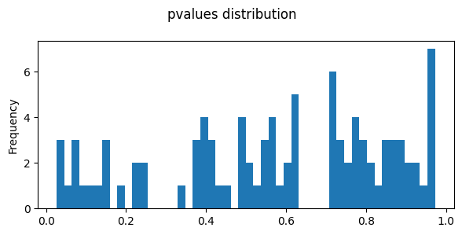
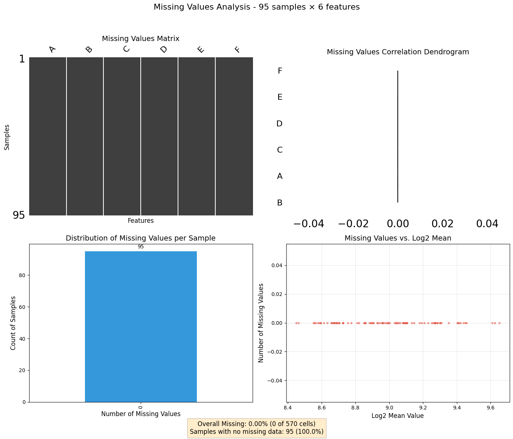

#reload when modified
#activate r magicimport pandas as pd
from IPython.display import Image, display
import os
import re
import tqdmimport svist4get as sv4gimport os
import pandas as pd
import numpy as np
import matplotlib.pyplot as plt
import seaborn as sns
#import utilities as UT
import missingno as msno
import random
import matplotlib.pyplot as plt
import matplotlib.patches as patches
import gc
from io import StringIO
from itertools import islice
from Bio import SeqIO
random.seed(1976)
np.random.seed(1976)import multiprocessing
multiprocessing.cpu_count()4import pandas as pd
import numpy as np
# Set random seed for reproducibility
np.random.seed(42)
# Create a DataFrame with 6 columns and 100 rows of random values
df = pd.DataFrame({
'A': np.random.randint(0, 1000, size=100),
'B': np.random.randint(0, 1000, size=100),
'C': np.random.randint(0, 1000, size=100),
'D': np.random.randint(0, 1000, size=100),
'E': np.random.randint(0, 1000, size=100),
'F': np.random.randint(0, 1000, size=100),
})
# Display the first few rows
print(df.shape)
df.head()(100, 6)| A | B | C | D | E | F | |
|---|---|---|---|---|---|---|
| 0 | 102 | 555 | 899 | 709 | 472 | 322 |
| 1 | 435 | 161 | 733 | 415 | 98 | 871 |
| 2 | 860 | 201 | 484 | 246 | 152 | 685 |
| 3 | 270 | 957 | 406 | 835 | 860 | 791 |
| 4 | 106 | 995 | 230 | 438 | 913 | 625 |
options(warn=-1)
library("limma")
library("edgeR")
library("cqn")
library("scales")
head(df) A B C D E F
0 102 555 899 709 472 322
1 435 161 733 415 98 871
2 860 201 484 246 152 685
3 270 957 406 835 860 791
4 106 995 230 438 913 625
5 71 269 748 202 895 287Loading required package: mclust
__ __
____ ___ _____/ /_ _______/ /_
/ __ `__ \/ ___/ / / / / ___/ __/
/ / / / / / /__/ / /_/ (__ ) /_
/_/ /_/ /_/\___/_/\__,_/____/\__/ version 6.1.1
Type 'citation("mclust")' for citing this R package in publications.
Attaching package: ‘mclust’
The following object is masked from ‘package:limma’:
logsumexp
In addition: Warning message:
In (function (package, help, pos = 2, lib.loc = NULL, character.only = FALSE, :
library ‘/usr/lib/R/site-library’ contains no packagesgroup <- factor(c(
'A','A','A','B','B','B'
))
y <- DGEList(counts=df, group=group)
keep <- filterByExpr(y, min.count = 100, min.total.count = 2000)
y <- y[keep,,keep.lib.sizes=FALSE]
counts = y$counts
genes = row.names(y)indata = pd.DataFrame(counts, index=genes,columns=df.columns)
indata.shape(95, 6)#https://rstudio-pubs-static.s3.amazonaws.com/79395_b07ae39ce8124a5c873bd46d6075c137.html
library(edgeR)
# Make groups
design_with_all <- model.matrix( ~0+group )
y <- DGEList(counts=indata,
group = group,
)
# Estimate dispersion
y <- estimateGLMCommonDisp( y, design_with_all )
y <- estimateGLMTrendedDisp( y, design_with_all )
y <- estimateGLMTagwiseDisp( y, design_with_all )
# Fit counts to model
fit_all <- glmQLFit( y, design_with_all )contrast <- glmQLFTest(fit_all, contrast=makeContrasts( groupA-groupB, levels=design_with_all ) )
table <- topTags(contrast, n=Inf, sort.by = "none", adjust.method="BH")$table
head(table) logFC logCPM F PValue FDR
0 0.06597355 13.34298 0.005686085 0.9406702 0.9719433
1 0.04059561 13.14642 0.001846354 0.9661689 0.9719433
2 0.63753291 13.12779 0.474061532 0.4993443 0.9719433
3 -0.55140493 13.77109 0.744456113 0.3988653 0.9719433
4 -0.51947133 13.45730 0.360391428 0.5552954 0.9719433
5 -0.34710021 13.03854 0.119907431 0.7328934 0.9719433fig,axes=plt.subplots(ncols=1,nrows=1,figsize=(6,3))
table.PValue.plot(kind='hist',bins=50,ax=axes)
plt.suptitle('pvalues distribution')
plt.tight_layout()
plt.show()
from ProjectUtility.mis_val_utility import *
mv_analyzer = MissingValuesAnalyzer(indata)
# Generate the dashboard
fig, axes, summary = mv_analyzer.plot_missing_dashboard()